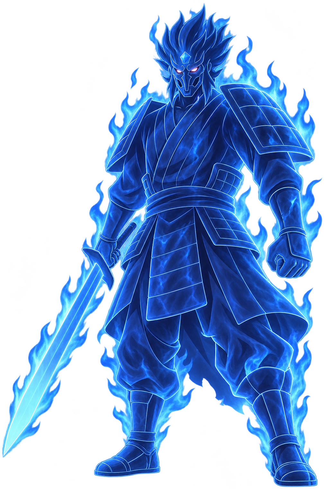
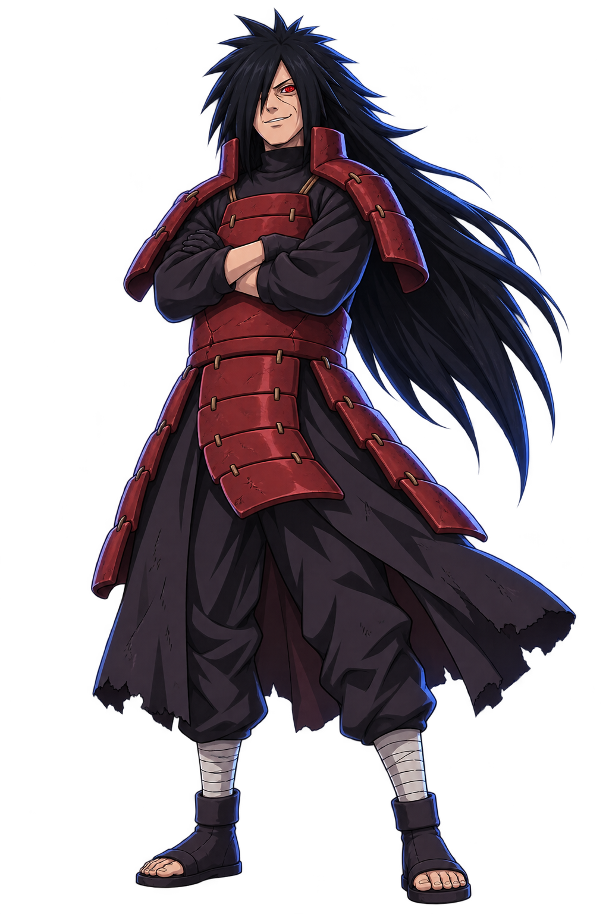

서로의 정보를 연결하고, 공대의 운명을 바꿔라.
공대 모집 / RAID COMMAND
함께, 전설을 넘어서다
마다라 레이드검수용 입장권공대 생성자만 1장 사용
—- 01공대장·역할
- 02입장권 확인
- 03공대 생성
내 공대 / 출정 대기
로컬 검수용 입장권 3장 · 서버 재시작 시 초기화
실계정 입장권·보상 및 라이브 연결 없음
01 환술02 분신03 화둔04 운석완전체 강림
RECRUITMENT
출정을 기다리는 공대 0
공대 목록을 불러오는 중입니다.